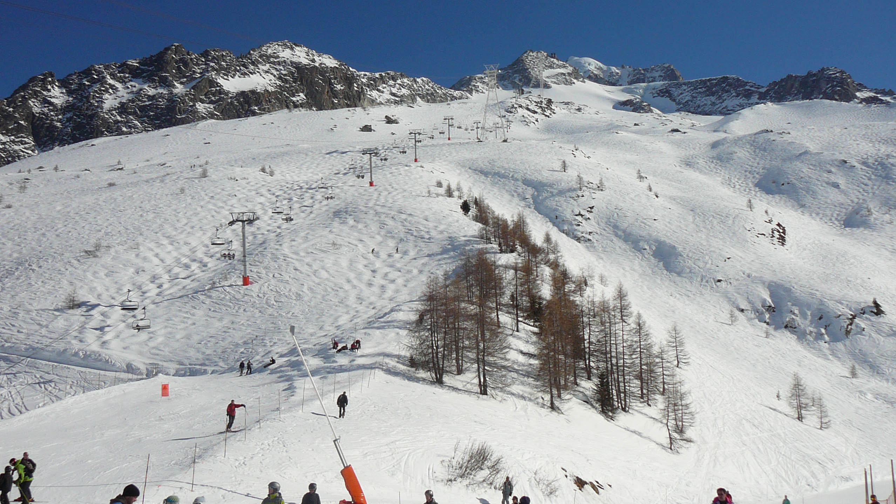
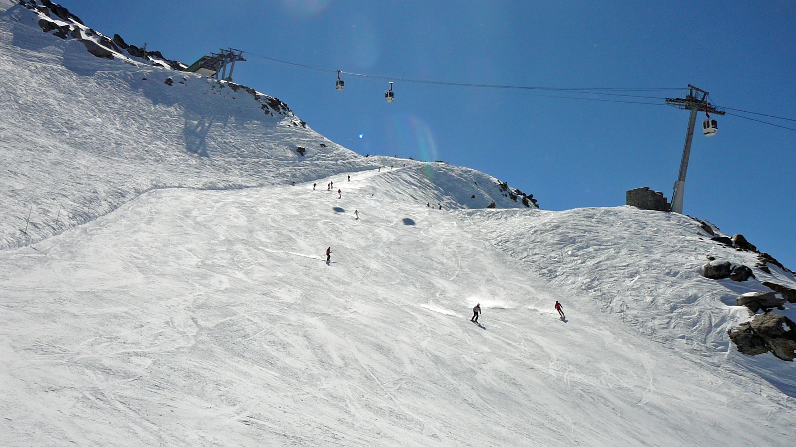
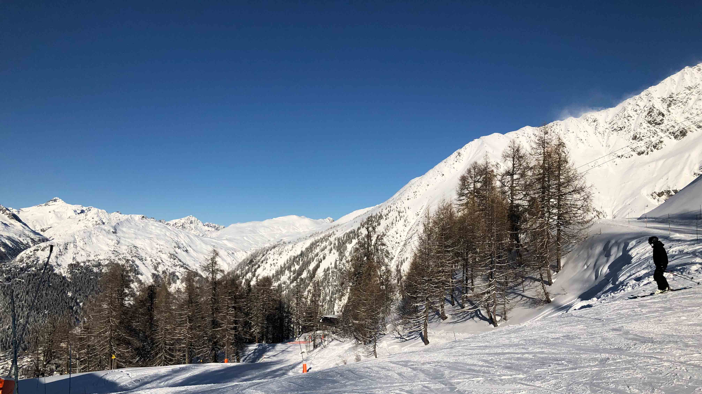
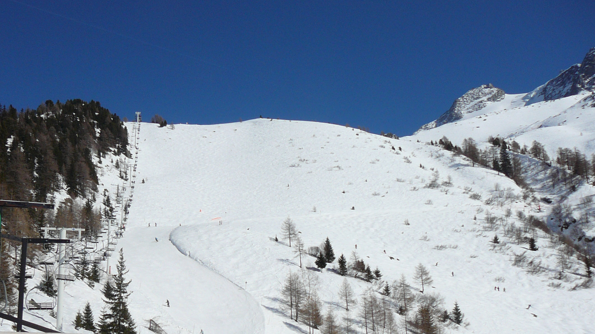
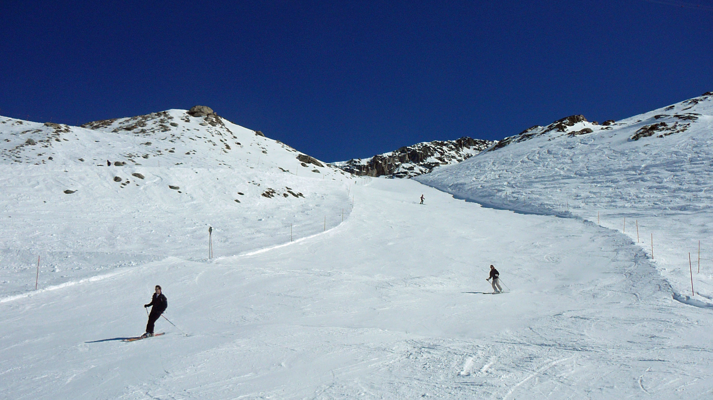
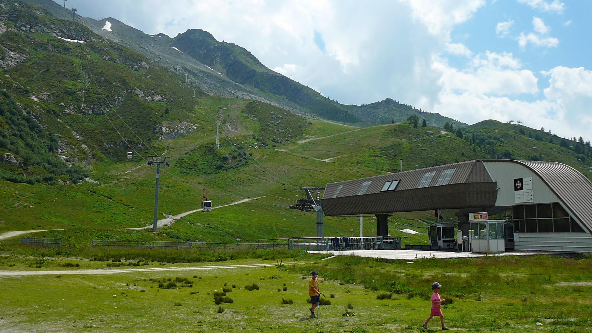

Domaine skiable des Grands Montets
Du ski en partie du glacier
Situé au dessus du village d'Argentière et au pied du glacier du même nom, le domaine skiable des Grands Montets propose un ski sportif. Son exposition nord garantit une neige de qualité tout au long de la saison.
Il est possible d'y effectuer une descente de près de 1500m de dénivelé entre le haut de la télécabine de Bochard à 2766m d'altitude et le village d'Argentière à 1230m d'altitude
L'incendie du 11 septembre 2018 à complèment détruit les installations du téléphérique des Grands Montets, rendant le secteur inaccessible en hiver. Des études sont actuellement en cours pour sa reconstruction.
Il est possible d'y effectuer une descente de près de 1500m de dénivelé entre le haut de la télécabine de Bochard à 2766m d'altitude et le village d'Argentière à 1230m d'altitude
L'incendie du 11 septembre 2018 à complèment détruit les installations du téléphérique des Grands Montets, rendant le secteur inaccessible en hiver. Des études sont actuellement en cours pour sa reconstruction.

Front de neige au niveau de la gare de Lognan

Piste rouge Bochard

Piste bleue Tabé
Ski en hiver, randonnées en été
Hiver comme été, la télécabine de Plan Joran permet de rejoindre rapidement le coeur du domaine. Le secteur débutant a récemment été modernisé avec un nouveau télésiège débrayable.
En hiver, le secteur de la Pendant offre un ski plein soleil face à Chamonix. Les amateurs de bosses apprécieront la piste noire remuaz.
En été, de nombreuses randonnées sont possibles sur ce secteur. Voici quelques exemples: -Point de vue sur le Glacier d'Argentière au départ de la télécabine de Plan Joran. Difficulté: facile
-Descente jusqu'au village d'Argentière au départ de la télécabine de Plan Joran . Difficulté: moyenne
-Montée jusqu'à la télécabine de Plan Joran depuis Chamonix via le chalet du Chapeau et la Tête des Prapators. Difficulté: difficile
En hiver, le secteur de la Pendant offre un ski plein soleil face à Chamonix. Les amateurs de bosses apprécieront la piste noire remuaz.
En été, de nombreuses randonnées sont possibles sur ce secteur. Voici quelques exemples: -Point de vue sur le Glacier d'Argentière au départ de la télécabine de Plan Joran. Difficulté: facile
-Descente jusqu'au village d'Argentière au départ de la télécabine de Plan Joran . Difficulté: moyenne
-Montée jusqu'à la télécabine de Plan Joran depuis Chamonix via le chalet du Chapeau et la Tête des Prapators. Difficulté: difficile

Télésiège de la Pendant

Piste rouge Combe

Les Grands Montets en été